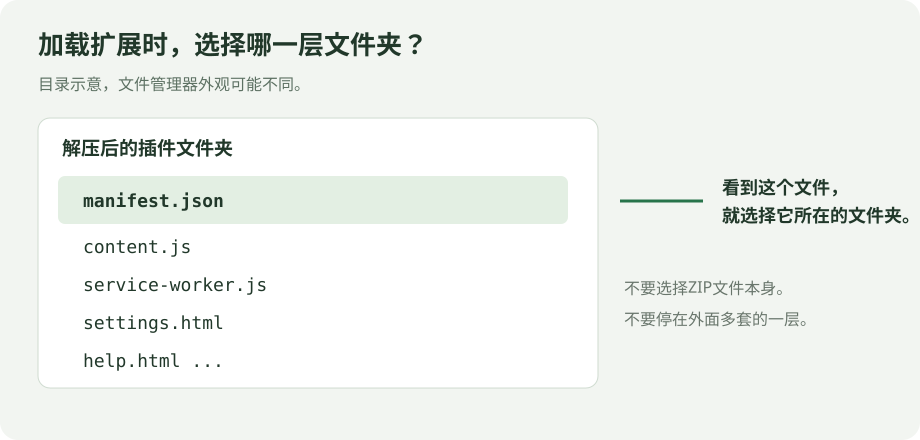
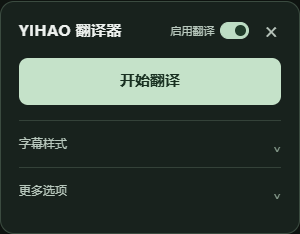

从安装到第一条中文字幕
按下面几步操作即可，不需要编程。安装完成后，日常翻译和字幕调整都在 YouTube 页面内进行。
1安装到 Chrome
- 把下载的 ZIP 解压到一个固定文件夹。不要直接在压缩包里操作。
- 打开这个文件夹，确认能直接看到
manifest.json。 - 在 Chrome 地址栏输入
chrome://extensions，按回车，开启右上角的开发者模式。 - 点击加载已解压的扩展程序，选择第 2 步中直接含有
manifest.json的文件夹。 - 回到已经打开的 YouTube 视频，刷新页面。右侧会出现YIHAO 翻译器按钮。
manifest.json”为准。不要选择 ZIP 文件，也不要选择更外面的一层文件夹。
2首次连接翻译模型
翻译使用你自己的 DeepSeek API，按平台用量计费。API Key 是访问密钥，只需在扩展自己的设置页填写一次。
- 前往 DeepSeek 官方开放平台，注册或登录，按平台提示准备 API 余额并创建密钥。
- 在 YouTube 点击YIHAO 翻译器 → 开始翻译。首次尚未配置时，会打开扩展设置页。
- 把密钥粘贴到设置页并保存，再回到 YouTube 开始翻译。保存成功只表示配置已保存，接口可用性还需实际调用确认。
正在确认教程打开方式。
以后修改密钥：打开 chrome://extensions，找到本插件，点击详细信息 → 扩展程序选项。
不要把密钥贴到 GitHub 问题反馈、公开截图或其他公开页面。
3在视频上点击“开始翻译”
- 打开一个有原语言字幕的普通 YouTube 视频，先确认 YouTube 自己的字幕按钮能显示原文。
- 点击右侧YIHAO 翻译器，展开控制面板，确认标题旁的启用翻译已开启，再点击开始翻译。
- 等待扩展阅读全文、分批翻译并自动审校。生成的字幕会显示在播放器中，已完成的部分会缓存。
默认是双语字幕：中文在上、原文在下。可以照常拖动播放进度、倍速播放和进入全屏。
每批初译后，AI 会按“忠实原意、句意完整、术语统一、中文自然、便于阅读”再检查一轮。审校也计入 API 用量，需要额外等待；它仍可能漏掉错误，但不会因一般的质量疑点中断翻译。
暂时不用时，关闭标题旁的“启用翻译”总开关。它默认开启；关闭会隐藏自定义字幕、恢复 YouTube 原生字幕，并阻止新翻译。已发出的 API 请求会完成并缓存结果，然后暂停后续批次，这部分调用仍可能计费。
总开关会同步到已经打开的 YouTube 页面，刷新或重启浏览器后仍记住。再次开启会恢复已生成字幕；未完成翻译需要手动点击继续翻译，不会自动恢复付费调用。密钥、样式和字幕缓存均保留。

下载尚未完成的任务，只会得到当前已生成的部分。若要本次输入的完整字幕，请等待任务完成；只导入某一段时，结果也只覆盖那一段。
4把字幕调到看着舒服
展开面板里的字幕样式：可以显示或隐藏字幕、切换双语，并开关字幕下方的深色底。这里的显示字幕只控制显示，不会停止翻译；需要暂停翻译时，请关闭标题旁的启用翻译总开关。
点击调整字幕样式，可以分别设置中文和原文的颜色、加粗与投影；原文字号以中文字号的百分比设置，默认 60%。
中文主字幕
默认在上方，白字略大，带黑色投影，便于在明亮画面上辨认。
原文副字幕
默认在中文下方，字号约为中文的 60%，用较轻的字重和投影作为对照。
建议先使用默认样式，觉得太大、太小或挡住画面时，再作调整。
自动取不到字幕时：导入原字幕
模型配置与导入入口在扩展设置页中，日常主面板里不显示这些入口。
- 保持目标 YouTube 视频打开，确认“启用翻译”总开关已开启。通过上面的打开扩展设置按钮，或 Chrome 扩展管理页的详细信息 → 扩展程序选项进入设置。
- 展开高级排错，点击刷新视频列表，核对标题并选择目标 YouTube 视频。
- 点击导入到所选视频，从弹出的窗口选择该视频的原语言字幕，支持 SRT、VTT、JSON3；选择后回到目标视频查看进度。
常见问题
1. 提示“清单文件缺失或不可读取”怎么办？
通常是选错文件夹或还没有解压。返回文件夹，找到 manifest.json，然后在 Chrome 中选择直接包含它的那一层文件夹。
2. 安装后，YouTube 上没有“YIHAO 翻译器”按钮？
确认扩展已启用，再刷新已经打开的视频页面。先用普通点播视频测试；Shorts 等页面尚未完成验证。也可以点击 Chrome 工具栏扩展菜单里的本插件。
3. 为什么一直显示“正在翻译”或“正在审校”？
第一次会先阅读全文，再分批翻译、审校，需要等待；网络和视频长度都会影响时间。保持 Chrome 打开，查看面板进度。审校暂时不可用时，会保留初译并继续。若网络、密钥或余额有问题，处理后点击“继续翻译”；停止任务会在当前 API 请求完成后生效。
4. 登录了 YouTube，为什么仍然取不到字幕？
登录不保证每部视频的字幕接口都可读取。先检查原生字幕能否正常显示，再刷新重试。当前实验版不支持无字幕视频；仍失败时，可以用设置页中的“高级排错”导入原字幕。
5. 密钥保存了，为什么仍然报错？
保存成功只说明密钥已存入本浏览器。检查粘贴是否完整、DeepSeek 账户余额和网络是否正常，再根据面板中的错误文字排查。反馈问题时，只提供错误文字，不要提供密钥。
chrome://extensions 中点击本插件的刷新按钮，再刷新 YouTube。保留原文件夹路径有助于继续使用原有设置和缓存。